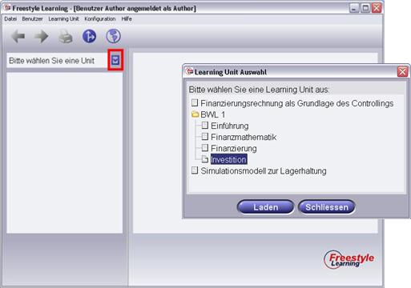

Die Inhalte, mit denen Sie in der Freestyle Learning-Umgebung arbeiten können, sind in Lerneinheiten zusammengefasst, so genannten Learning Units. Zum Auswahl einer Learning Unit klicken Sie auf die Schaltfläche neben dem Textfeld mit dem Inhalt "Bitte wählen Sie eine Learning Unit". Darauf hin wird ein Dialogfenster angezeigt, in dem alle in Ihrer Installation verfügbaren Learning Units in einer Baumstruktur aufgeführt sind.

Um eine Learning Unit zu laden, selektieren Sie diese im Baum und klicken anschließend die Schaltfläche "Laden". Dadurch werden die Inhalte der durch diese Unit unterstützten Perspektiven geladen. Der Fortschritt wird dabei in einem Bildschirmfenster angezeigt.
Hinweis: Sollten im Dialog keine Units aufgelistet sein, sind bei Ihrer Freestyle Learning-Umgebung noch keine Units installiert. Dann müssen sie zunächst eine Learning Unit importieren.
Zurück zur Hauptseite